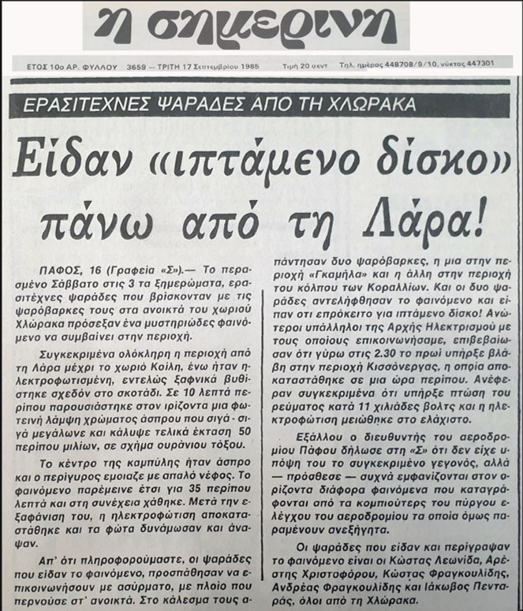
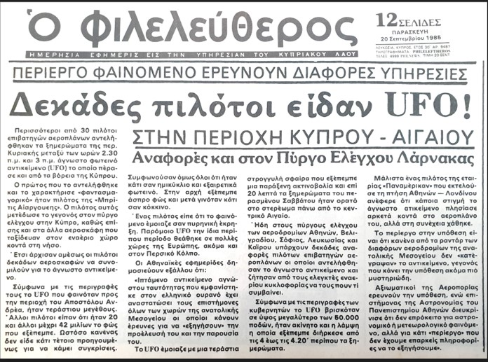

Description Περιγραφή
On 14 September 1985, a commercial airline pilot flying a Larnaca–Birmingham route reported observing a bright, shining object at approximately 35,000 feet, while flying about 100 miles before Rhodes. He described the object as moving between Rhodes and the Turkish coast, then appearing to travel north of Rhodes along the Turkish coast. Estimated diameter was roughly 3.5 miles.
Because of the distance, the pilot was unable to calculate the object's speed. He consulted with the Athens ground controller, who told him that a number of other pilots had reported the same occurrence. From their reports, the object had appeared between Crete, west of Cyprus, Rhodes, and Smyrna.
The pilot filed a formal report with the Cyprus Investigation Committee on Aerial Phenomena (CICAP), dated 24 September 1985. Ground witnesses also reported unusual electrical disturbances at the same time: the Σημερινή newspaper reported that at around 2:30 a.m. on 14 September there was an eleven-thousand-volt power drop near Kissonegra, and a wide area from Lara to Koili was briefly plunged into darkness. Fishermen from Chloraka reported seeing a bright white arc, roughly 50 miles wide, that lasted 35 minutes before the lighting was restored.
The air traffic controller's account was later broadcast on the Greek television series Οι Πύλες του Ανεξήγητου. The original video of that broadcast is no longer available online; only a portion of the testimony was preserved.
Στις 14 Σεπτεμβρίου 1985, πιλότος πολιτικής αεροπορίας σε πτήση Λάρνακα–Birmingham ανέφερε ότι παρατήρησε ένα φωτεινό, λαμπερό αντικείμενο σε ύψος περίπου 35.000 ποδών, ενώ πετούσε περίπου 100 μίλια πριν από τη Ρόδο. Περιέγραψε το αντικείμενο να κινείται μεταξύ Ρόδου και τουρκικών ακτών, και στη συνέχεια να κινείται βόρεια της Ρόδου κατά μήκος της τουρκικής ακτής. Εκτιμώμενη διάμετρος περίπου 3,5 μίλια.
Λόγω της απόστασης, ο πιλότος δεν μπόρεσε να υπολογίσει την ταχύτητα του αντικειμένου. Επικοινώνησε με τον ελεγκτή εδάφους της Αθήνας, ο οποίος του είπε ότι αρκετοί άλλοι πιλότοι είχαν αναφέρει το ίδιο περιστατικό. Από τις αναφορές τους, το αντικείμενο είχε εμφανιστεί μεταξύ Κρήτης, δυτικά της Κύπρου, Ρόδου και Σμύρνης.
Ο πιλότος υπέβαλε επίσημη αναφορά στην Κυπριακή Επιτροπή Έρευνας Αερίων Φαινομένων (CICAP), με ημερομηνία 24 Σεπτεμβρίου 1985. Μάρτυρες στο έδαφος ανέφεραν επίσης ασυνήθιστες ηλεκτρικές διαταραχές την ίδια ώρα: η εφημερίδα Σημερινή ανέφερε ότι γύρω στις 2:30 π.μ. της 14ης Σεπτεμβρίου υπήρξε πτώση τάσης έντεκα χιλιάδων βολτ κοντά στην Κισσόνεργα, και μια ευρεία περιοχή από τη Λάρα μέχρι το χωριό Κοίλη βυθίστηκε πρόσκαιρα στο σκοτάδι. Ψαράδες από τη Χλώρακα ανέφεραν ότι είδαν μια λαμπρή λευκή αψίδα, πλάτους περίπου 50 μιλίων, που διήρκεσε 35 λεπτά πριν αποκατασταθεί ο φωτισμός.
Η μαρτυρία του ελεγκτή εναέριας κυκλοφορίας μεταδόθηκε αργότερα στην ελληνική τηλεοπτική σειρά Οι Πύλες του Ανεξήγητου. Το αρχικό βίντεο της εκπομπής δεν είναι πλέον διαθέσιμο στο διαδίκτυο· διασώθηκε μόνο ένα τμήμα της μαρτυρίας.
Source Material Πηγαίο Υλικό


The original CICAP report form, completed and signed by the pilot on 24 September 1985, is held in our archive: Η αρχική φόρμα αναφοράς CICAP, συμπληρωμένη και υπογεγραμμένη από τον πιλότο στις 24 Σεπτεμβρίου 1985, φυλάσσεται στο αρχείο μας:
📄 CICAP report (PDF) → 📄 Αναφορά CICAP (PDF) →Air traffic controller testimony: from the Greek series Οι Πύλες του Ανεξήγητου. The full broadcast is no longer available online. Μαρτυρία ελεγκτή εναέριας κυκλοφορίας: από την ελληνική σειρά Οι Πύλες του Ανεξήγητου. Η πλήρης εκπομπή δεν είναι πλέον διαθέσιμη στο διαδίκτυο.
Notes Σημειώσεις
This case remains under investigation. It is notable for combining multiple pilot reports, ground witness testimony, and a documented electrical disturbance at the time of the sighting. If you witnessed this event or hold additional documentation, please contact us via the Report a UAP form. Η υπόθεση παραμένει υπό διερεύνηση. Είναι αξιοσημείωτη για τον συνδυασμό πολλαπλών αναφορών πιλότων, μαρτυριών από το έδαφος και τεκμηριωμένης ηλεκτρικής διαταραχής κατά τη στιγμή της παρατήρησης. Εάν υπήρξατε μάρτυρας του γεγονότος ή διαθέτετε πρόσθετη τεκμηρίωση, παρακαλούμε επικοινωνήστε μαζί μας μέσω της φόρμας Αναφέρετε UAP.